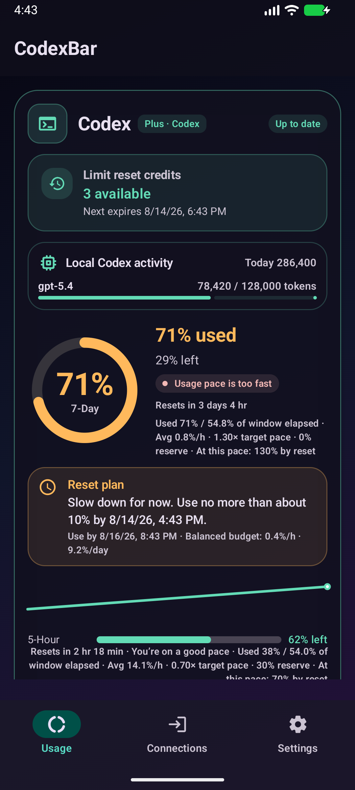
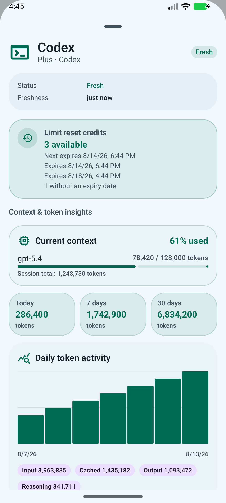
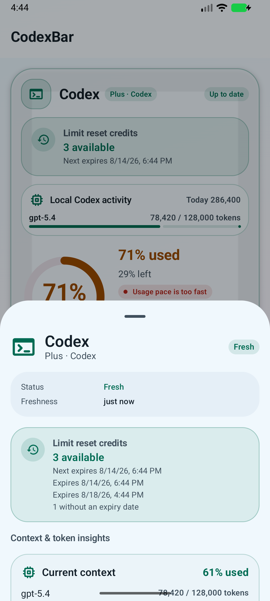
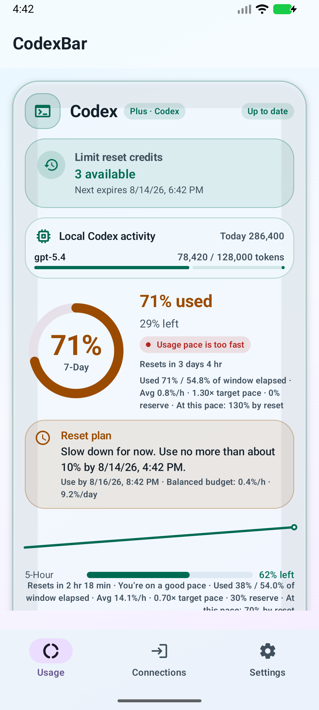
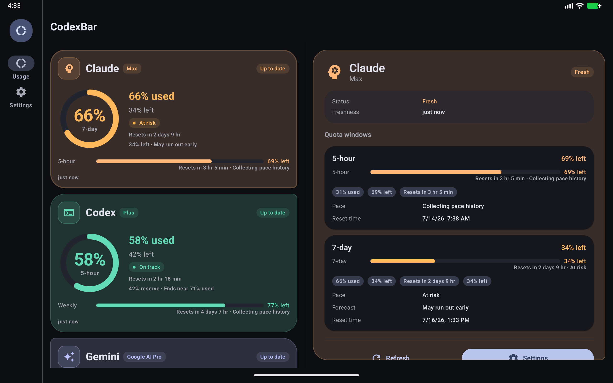

01
On track
使う速さを、言葉で。
目標ペースと現在の消費量を比較。「いい調子」「使いすぎ」など、数字を判断に変えるメッセージを表示します。
「あと何％？」から「このペースで大丈夫？」へ。Codex、Claude、Gemini、GitHub Copilotなど18サービスの残量・リセット・履歴・使い方のペースを、ひとつの画面で。

リセットまでの時間と利用ペースを組み合わせて、「今どう使うべきか」まで見える形にします。
目標ペースと現在の消費量を比較。「いい調子」「使いすぎ」など、数字を判断に変えるメッセージを表示します。
残り時間、予備、予測消費をもとに、いつまでにどれくらい使えるかを具体的に提案します。
オプションのローカル companion で、Codexのコンテキスト使用率や日別・モデル別トークン履歴を可視化します。
Codexのリセットクレジット、追加クォータ枠、現在のコンテキスト、日別トークンを同じ詳細画面に整理。必要な情報へすぐ辿り着けます。
リセットクレジット残数と次の失効日時を表示
コンテキスト現在のモデルと使用率を視覚化
トークン履歴入力・キャッシュ・出力・推論を分類
ローカル companion は会話本文、ファイルパス、アカウントトークンを送信しません。


AndroidらしいMaterial 3から、透明感のあるLiquid Glass、精密なWinUI 3、深い色のAuroraまで。
テーマを選ぶとプレビューが切り替わります

ホーム画面、通知、Quick Settings、大画面。いま見ている場所に、必要な情報だけを。
短時間の監視セッションでは、残量とペースを通知シェードから更新できます。
プロバイダー、対象期間、残量、リセット、ペース、鮮度をウィジェットごとに選択。
タブレットや横画面では、一覧と詳細を同時に表示。情報量を落とさず広い画面を活かします。

サービスごとの違いを保ったまま、重要な数字を同じ見方に整理します。
CodexBar専用のホスト型バックエンドはありません。接続情報はAndroid Keystoreで保護され、検証に成功したあとだけ暗号化保存されます。
セキュリティ設計を読む資格情報は端末固有の鍵で暗号化。バックアップや端末移行からも除外します。
認証情報を任意のURLへ送らず、対象サービスの検証済みHTTPSホストだけを使用します。
MITライセンス。アプリ、companions、リリース検証の実装をGitHubで確認できます。
最新の安定版APKをGitHub Releaseから。無料、広告なし、Android 8.0以降。
APKを取得最新Releaseの署名済みapp-release.apkをダウンロード
Androidで開くブラウザまたはファイル管理アプリからインストール
AIを接続Connectionsから使っているサービスを安全に追加